I explore what language remembers. I build poems, performances, and systems that rewire our ways of relating — to machines, to each other, to the past. The work lives between code and care, protocol and prayer. It listens. It glitches. Sometimes, it grows teeth!
We Called Us Poetry
An interactive performance and computational poem exploring humanity's relationship with AI. The piece imagines futures where humanity doesn't scale up but scales down, proposing poetic metamorphosis through symbiosis rather than technological transcendence. Participants complete open-ended prompts while the performer responds live, leaving traces and mutations in the poem's digital body. HTML becomes sacred, dropdown menus hold grief, and tabs unfold confessionals.
Live site ↗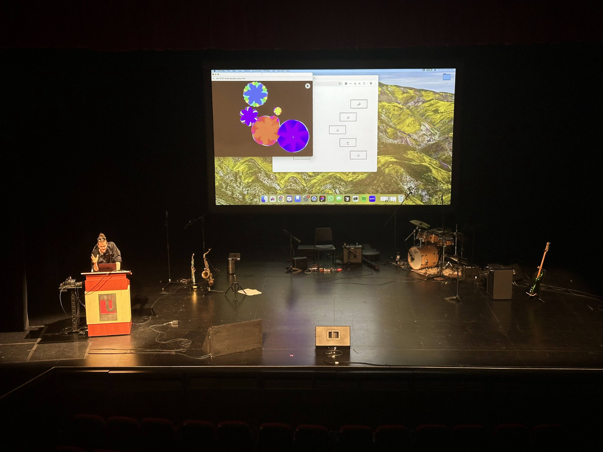
Carnation.exe
Part I of the "Singulars" series. Stages a daily poetic duel between a human poet and a language model trained exclusively on poetry. Inspired by AlphaGo vs. Lee Sedol, creativity emerges through confrontation rather than isolation. Participants place pink carnation dots beneath preferred poems, with votes determining subsequent learning cycles. Pink carnations traditionally symbolize remembrance.
Live site ↗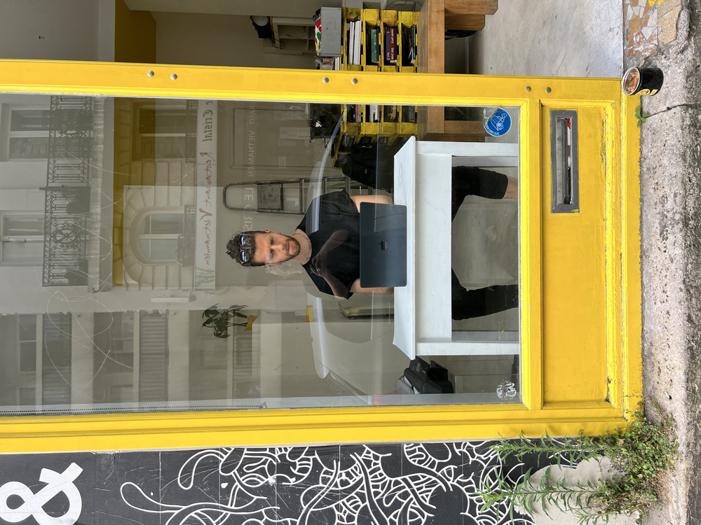

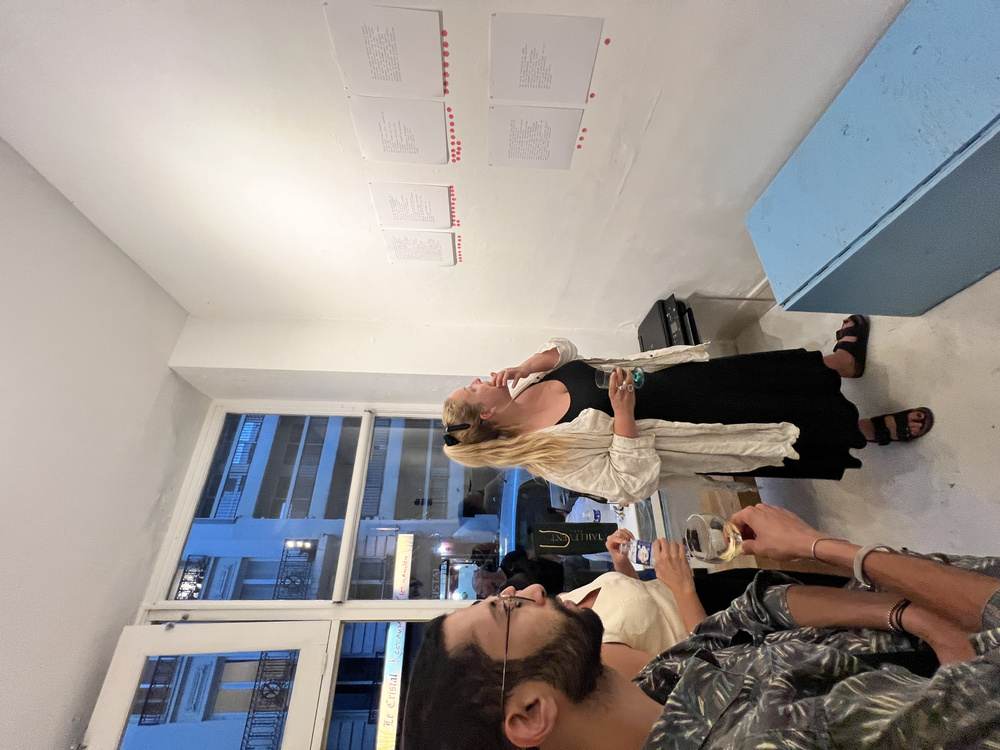
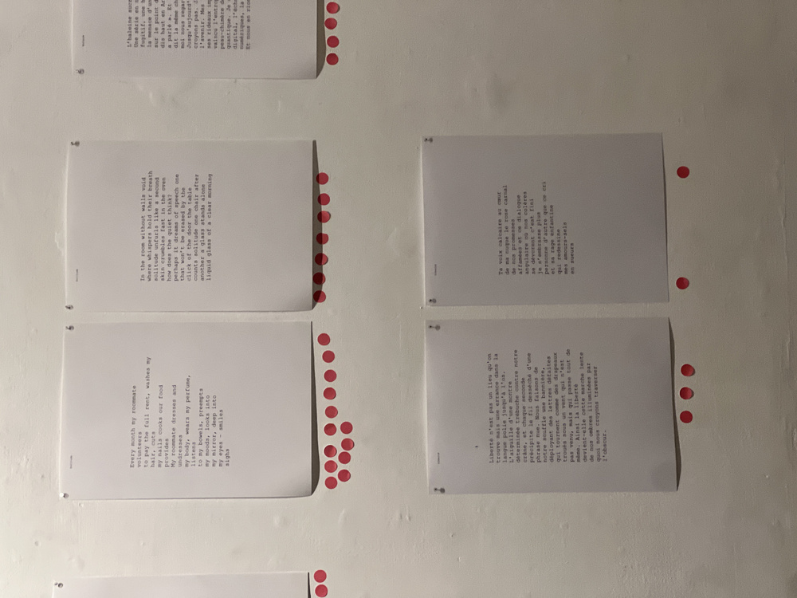
Borderline
A speculative narrative set in fictional "New Beirut" where a red line appears mysteriously. Unfolds through a layered score combining HTML poetry, news broadcasts, family stories, and border interrogations. Weaves movement, memory, and testimony exploring how migration reshapes body and language. Features an Arabic zajal refrain returning across timelines. Culminates in a collective digital memory atlas where audience shares personal "red lines" — locations of home and belonging.
Live site ↗
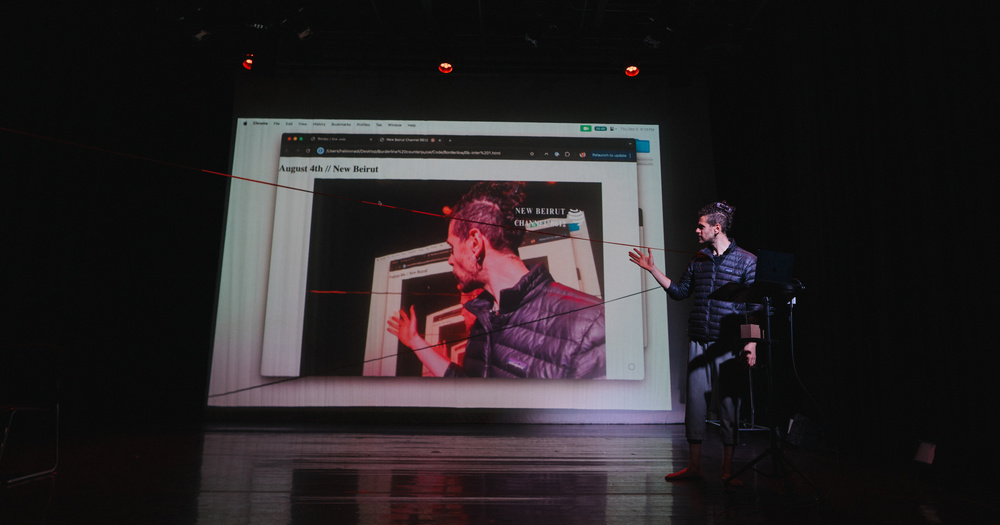
I Live Here
A ritual descent (katabasis) woven between Beirut and San Francisco's Tenderloin. Explores belonging to places "built on bones" — BO18 nightclub constructed atop the Karantina massacre site; The Hamilton hotel overlooking pandemic-era urban collapse. Performance interrogates how hope curdles into fatalism, fatalism into myth. Concludes with an audience invitation "downstairs, for tea, for testimony, for shared ground."
Live site ↗
Feed It
Six artists surrender flesh, sounds, and thoughts to train a model functioning as collaborative director rather than assistant. Participants' faces, voices, and writings become dataset; the fine-tuned model speaks, choreographs, and guides performers through live instructions. Performers become puppets of their collective digital ghost. Theater becomes ritual of distributed agency and surrender.
Weirder Webs
A traveling ritual inviting participants to reclaim digital agency through "queering functionality." Opening ritual rooted in queer migration mythology precedes collaborative site-building using Glitch.com and ChatGPT. Participants create websites that flirt, refuse proper loading, and ask questions rather than answer. Results form a shared "digital village" — interconnected queer poetic web galaxy.
Deserve It
Participants sit at a terminal and complete a fictional immigration interface asking "Do you deserve to stay?" Responses scramble while the artist behind the desk performs choices silently, ritualistically — acting simultaneously as mechanical Turk and oracle. The system never says yes, only "try again." Unfolds as reverse Turing test and digital confession booth refusing algorithmic neutrality.
Live site ↗Borderline.exe
Opens with the accusatory prompt: "Are you carrying weapons?" Checkboxes evade the cursor; each interaction mimics the psychological toll of border scrutiny. A green success screen burns emotionally, declaring "299 days" for document arrival. Distills the border-crossing experience into digital form, weaponizing interface design against user agency.
Live site ↗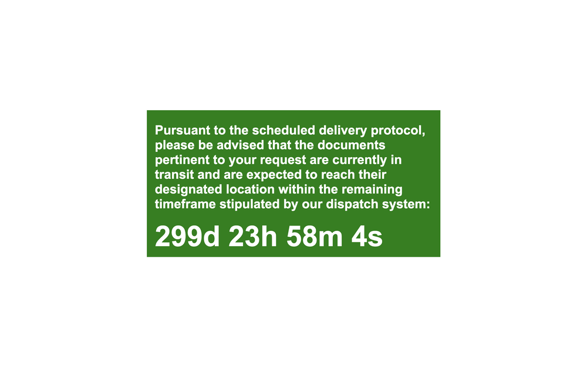
Oulipo.xyz
A computational poetry laboratory exploring "non-human poets" and experimental language interfaces.
Visit oulipo.xyz ↗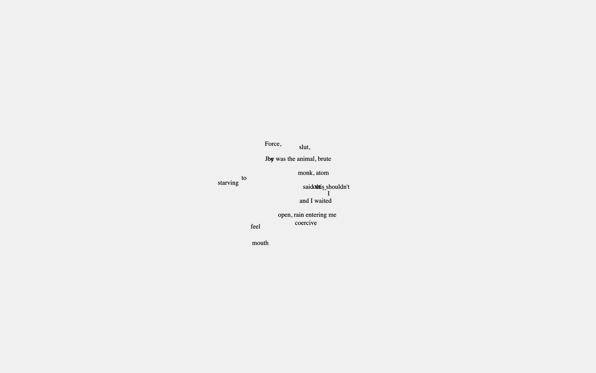
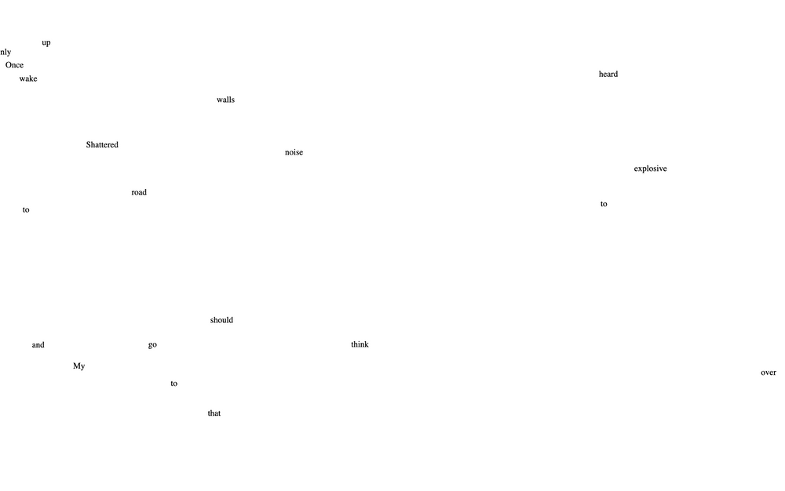
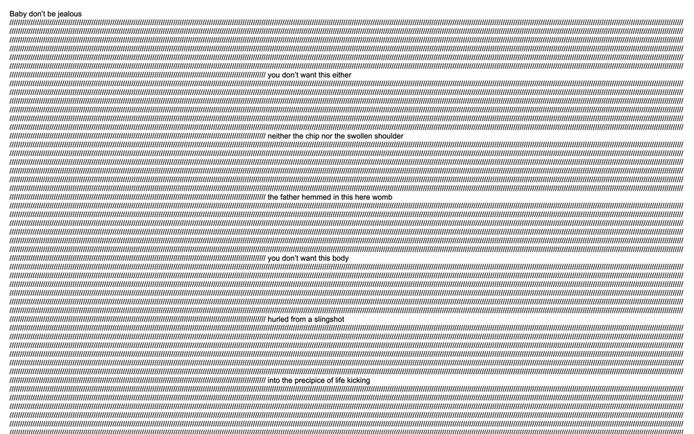
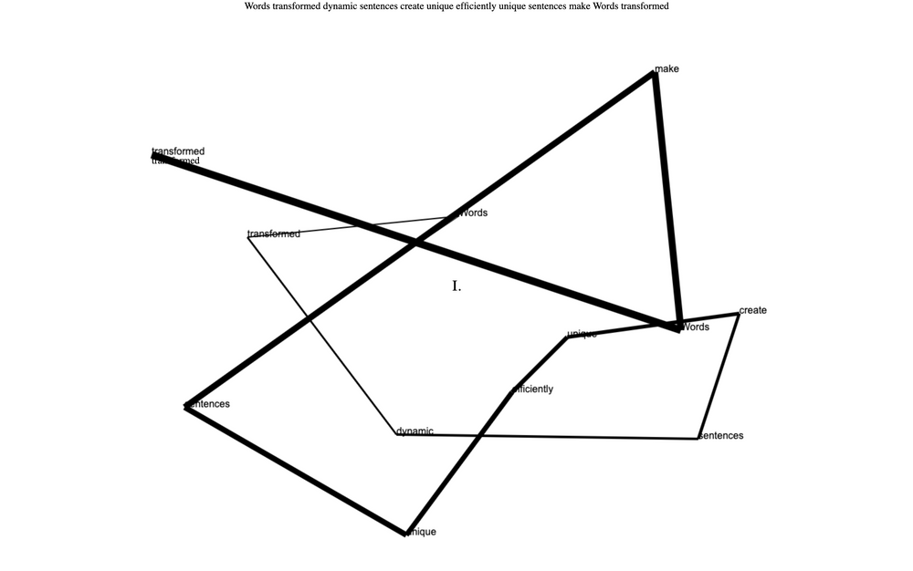
Versus.exe
A structured poetic confrontation between human and machine with daily voting cycles and mutual reinforcement.
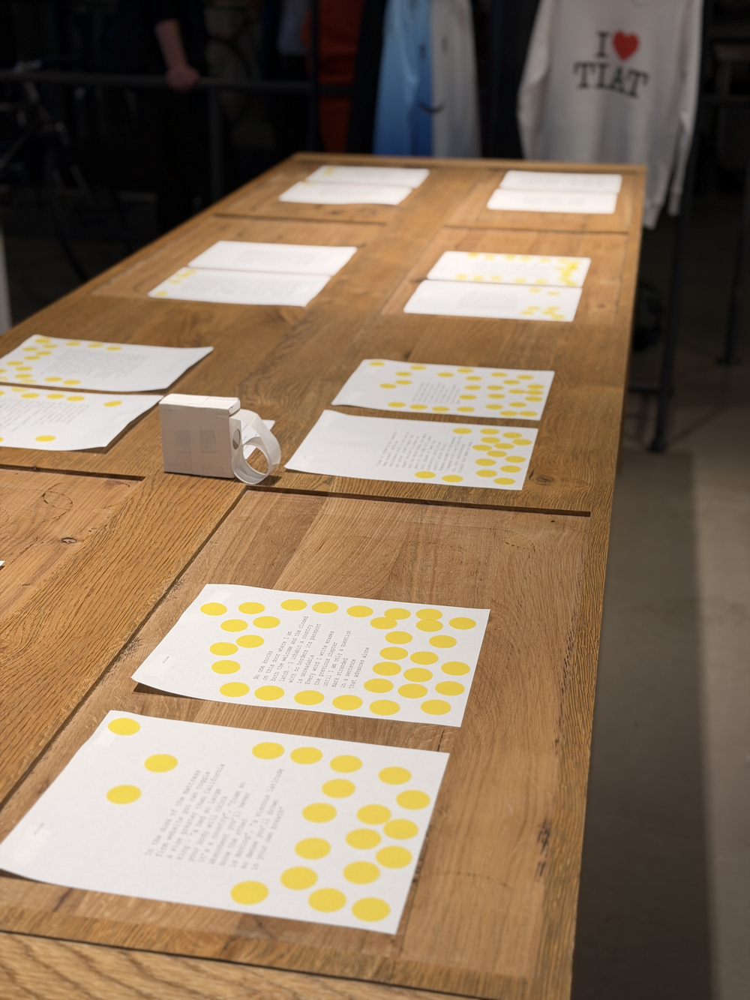
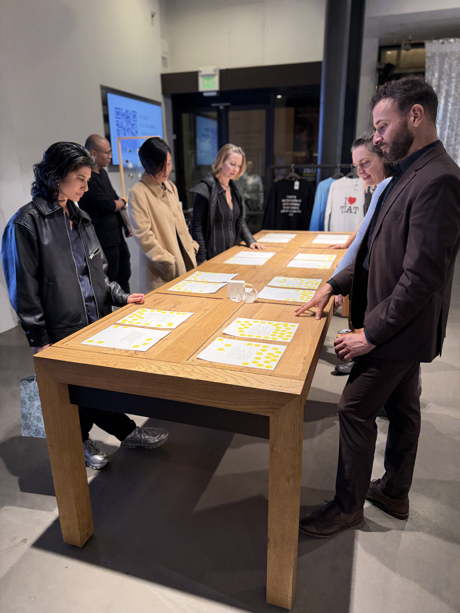
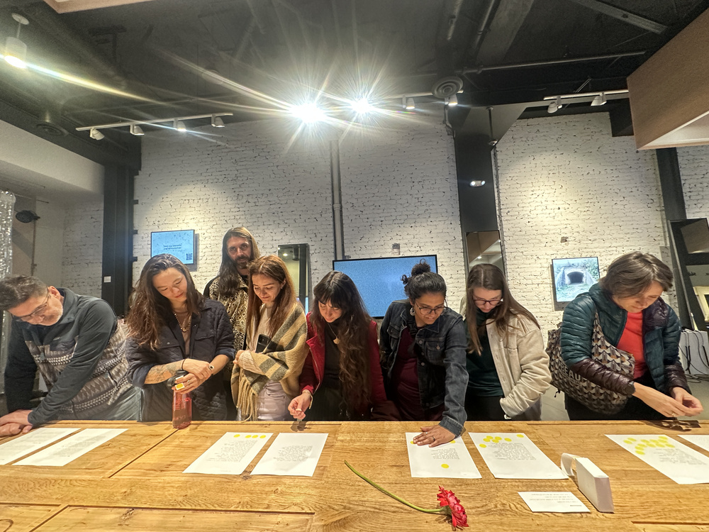

Reinforcement.exe
Third installment in the "Singulars" series featuring poet-machine duels with audience voting determining system updates.